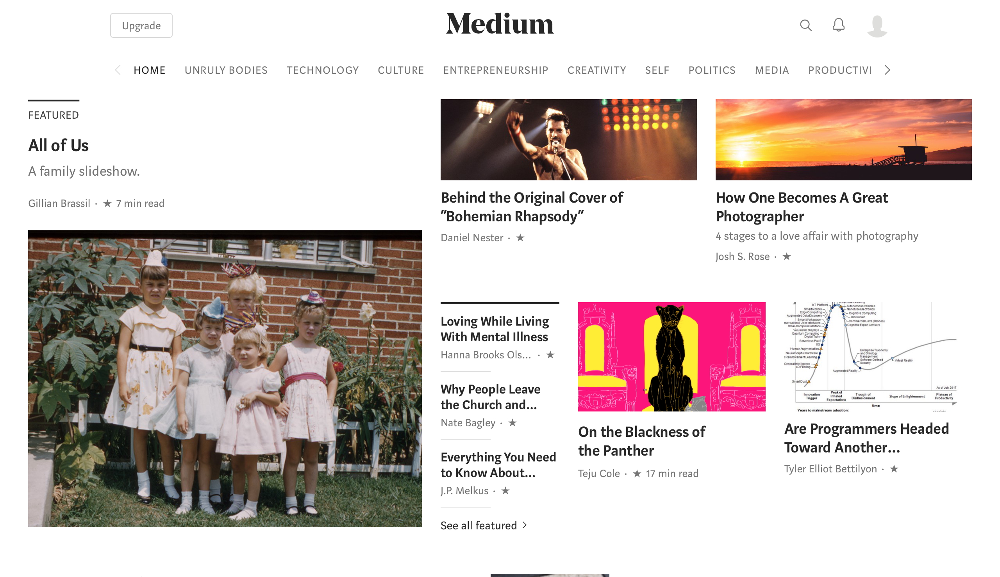
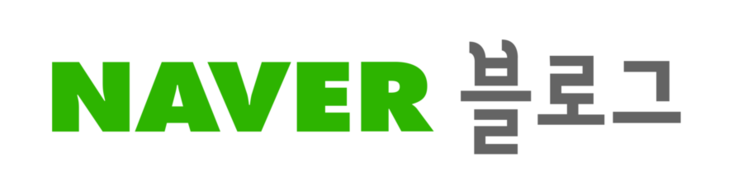

Github + Ghost 첫번째 글

나는 블로그를 시작해 보기 위해 많은 종류의 블로그 플랫폼을 찾아보고 있다.
아직은 어떤걸로 사용할지 확정하지 못했지만 Medium에 첫 글을 쓰고 같은 글을 조금 수정해 크런치에 올리려고 한다.
나와 같이 블로그를 시작하기에 앞서 고민중인 사람들에게 조금이나마참고될 수 있을듯 싶어 내가 블로그들을 찾아본 결과를 공유한다.
1. 네이버 블로그

사실 네이버 블로그는 굳이 말을 하지 않아도 이미 수많은 사람들이 알고있고, 그 만큼 가장많은 한국 블로그가 네이버 블로그를 통해 만들어 지고 있다. 하지만 블로그 수가 많은 만큼 수많은 블로그 중에 득이되는 블로그를 찾는 일은 쉽지않고, 이미 많은 사람들은 네이버 블로그에 대한 신뢰를 잃은 지 오래다. 또한 커스터마이징에 한계가 뚜렷하고, 네이버의 심한 간섭이 있어 자유롭게 블로그 활동 하기 어려움이 있다.
결정적으로 내 스타일이 아니다.
2. 티스토리
티스토리는 현재 다음에서 운영중인 블로그 플랫폼이다. 특이한 점은 티스토리는 마음대로 가입하고 블로그를 시작할 수 없다. 이미 잘 운영중인 티스토리 블로거가 초대권을 줘야만 시작할 수 있다. 또, 생각보다 많은 사람이 이 초대권을 갖고싶어 하기때문에 초대권을 받기는 생각보다 쉽지않다. 그 덕에 티스토리의 블로거들은 대부분 열정이 있는 사람들이 많다. 그렇기에 티스토리 블로그의 신뢰도는 꾀나 높은 편이다.
네이버보다 커스터마이징 부분도 좋아서 한번 고려해 볼만하다.
3. Github Pages
이건 개발자들에게 익숙한 Github의 블로그이다. 이 블로그는 다른 블로그 플랫폼과 다르게 내가 알아서 다 해야한다. 그렇기에 번거롭고 어렵지만 경험이 되고, 완벽한 커스터마이징을 할 수 있기 때문에 사실 개발자가 사용하기에 가장 좋은 블로그 플랫폼이 아닐까 생각한다.
또한 Ghost, Jekyll, Hexo과 같은 정적 사이트 생성기와 함께 한다면 조금더 편하게 MarkDown을 이용해 글을 작성 할 수 있다.
개발자에게 좋은 경험이 될 거 같다.
사실 나는 이미 Hexo, Jekyll를 이용해 블로그를 만들었고, 마지막으로 Ghost를 이용해 지금 글을 작성 중이다.
4. Medium
이건 최근에 처음 알게된 블로그 플랫폼이다.이 플랫폼은 자체 디자인이 깔끔해서 커스터마이징 할 필요가 없어보인다. 그리고 커스터마이징이란게 많이 없는거 같다.이게 이 블로그의 가장 큰 장점이자 단점이라 생각된다.
이러한 장점으로 글을 편하게 쓸 수 있지만, 글을 잘 못쓰는 나로써는 나만의 스타일을 만들기 힘들 것 같다.
내 Medium에서의 이와 같은 내용의 글
편하게 글을 쓰고 싶다면 추천한다.
5. 카카오 브런치

카카오 브런치는 사실 Medium에 글을 쓸때 까지만 해도 '기타 등등'이었다.
하지만 카카오 브런치에 글을 쓴 있는 이유는 깔끔하다는 이유 하나다.
Medium과 상당히 닮아있다. 그래서 테스트 해보고자 한다.
브런치에서의 이와 같은 내용의 글
6. 기타 등등..
이 외에도 워드 프레스, 텀블러, 구글 블로그 등의 좋은 블로그 플랫폼이 있다.
내가 블로그를 시작하기에 앞서 써본 블로그 플랫폼들은 아래와 같다. (순서 나열)
- 워드 프레스
- 티스토리
- Github Page + Hexo
- 구글 블로그
- Github Page + Jekyll
- Medium
- 카카오 브런치
- Github Page +Ghost
사실 이 모든 블로그 플랫폼들의 장단점을 다 느껴보지도 못할만큼 짧게 설치만 해봤다. 그리고 느껴지는 직감적인 느낌으로 판단해 지금 여기까지 왔다.